For the SEO with 40 product images on the page and zero in the SERP. And for the developer with a ticket that just says "fix thumbnails."
Google's image thumbnail guidance spans the image SEO best practices, the Discover guidelines, and various structured data docs, none of which directly answer the question most people arrive with: why is my page not getting the multi-image thumbnail treatment when the result underneath it is?
It stitches the documentation together, adds what independent field research shows, and gives you a diagnostic sequence for working out where your page falls short.
How common are image thumbnails in Google Search?
More common than most SEOs realise, and significantly more common on mobile than on desktop. According to Semrush Sensor data (April 2026), image thumbnails appear in around 49% of US desktop SERPs and 71% of US mobile SERPs across all categories. In the Shopping category specifically, the numbers are higher still: 77% on desktop and 88% on mobile. If you work in e-commerce, image thumbnails are not an edge case. They are the default.
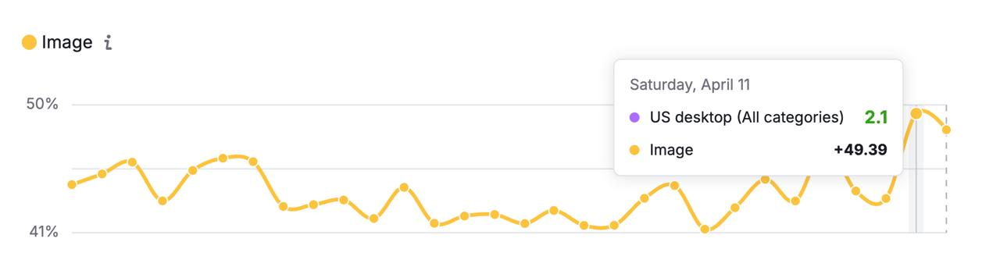
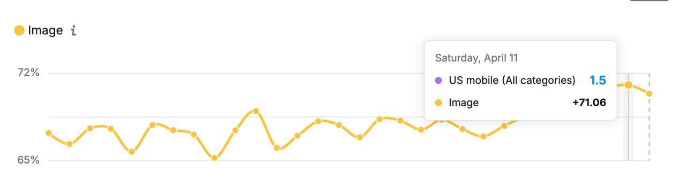
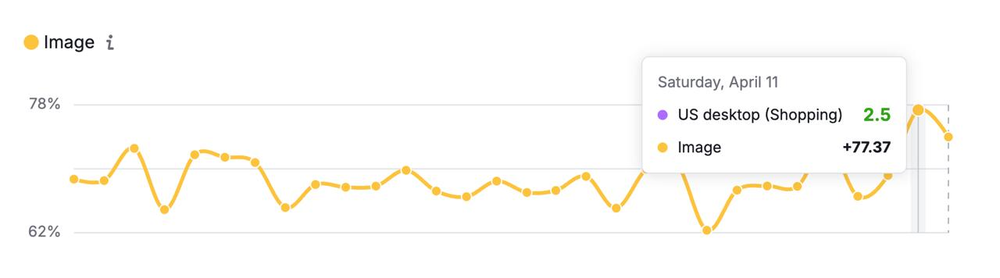
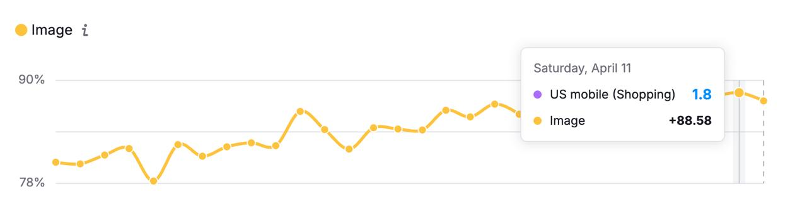
The two thumbnail treatments (and what you're actually chasing)
Google shows one of two thumbnail treatments for organic results: multiple images in a horizontal row, or a single image beside the snippet. For many pages, it shows neither. Google's official name for all of these is text result images: that's the term used in their documentation and the one to search if you're trying to find Google's own guidance. No dedicated feature page. No validation tool. No structured data trigger. Compare that to the rich results documentation, which comes with schema specs, a testing tool, and a dedicated search gallery, and the message is clear: Google isn't particularly interested in helping you get these.
Multi-image treatment
The multi-image treatment is almost exclusively an e-commerce feature. It appears primarily on category pages and collection pages, where Google extracts a selection of product images and renders them as a scrollable strip.
On desktop
The standard format is roughly 7 images, with a less common variant showing 3 images aligned to the right of the snippet. Portrait-orientation images need more of them to fill the available space.
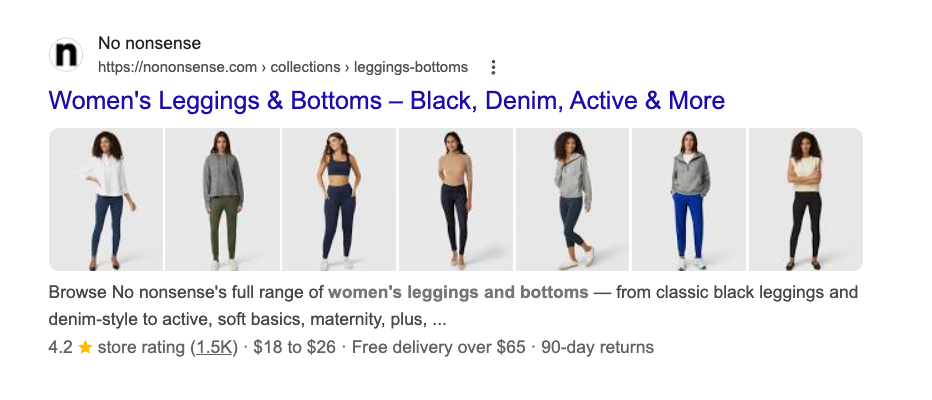
On mobile
The count varies more than most guides acknowledge. The same query can return 2, 3, 4, 5, 6, or 7 images depending on the result. It is not a fixed format. The six examples below are from a single search session:
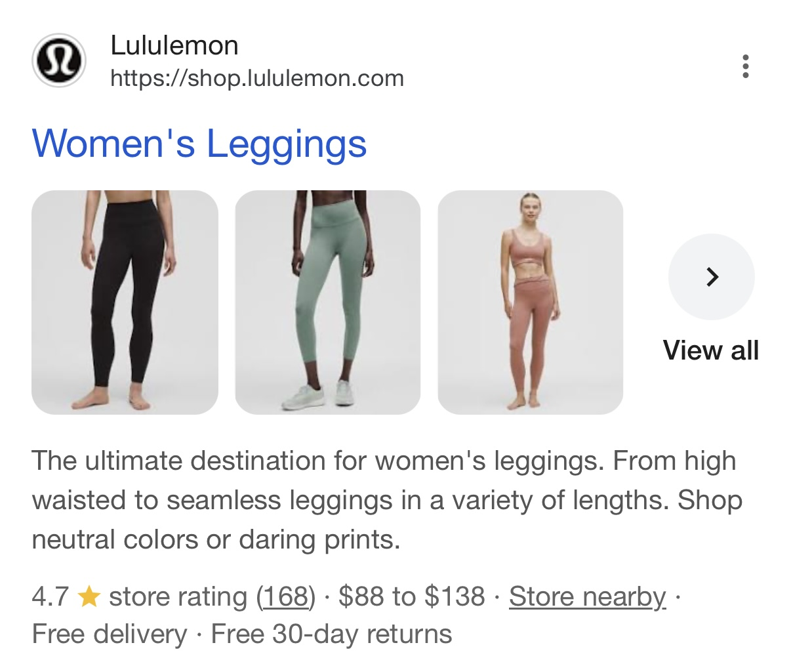
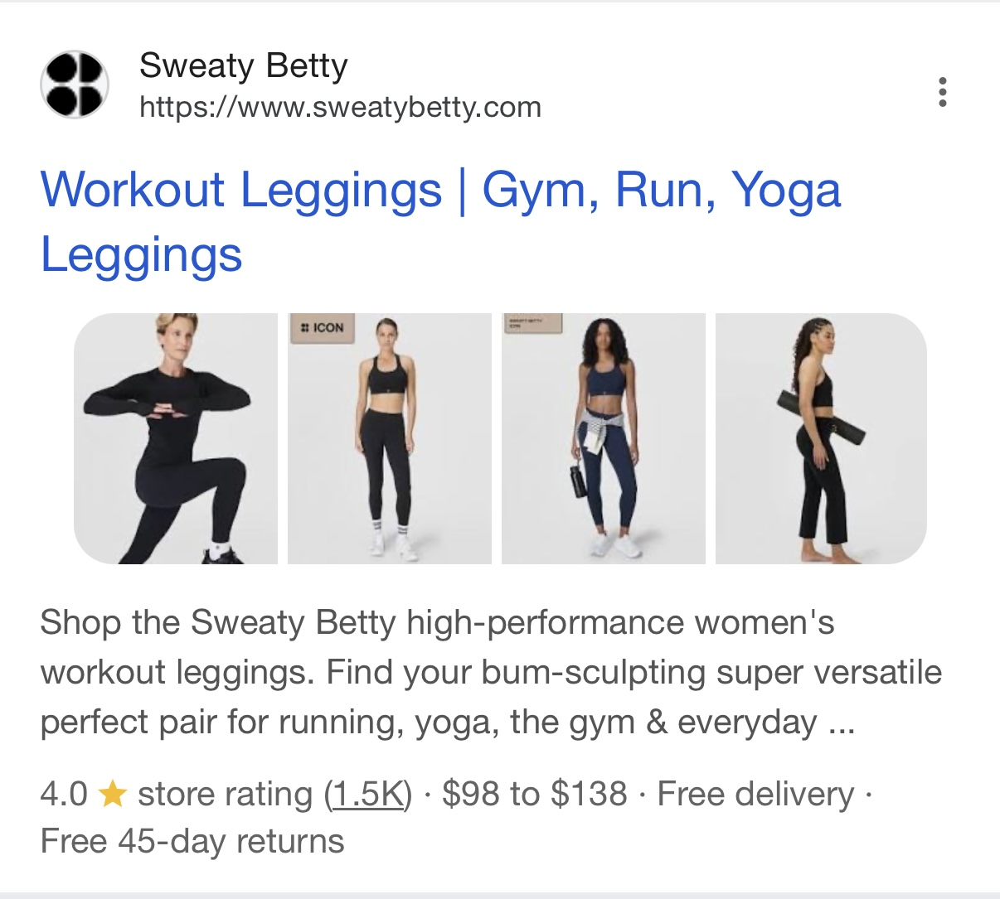
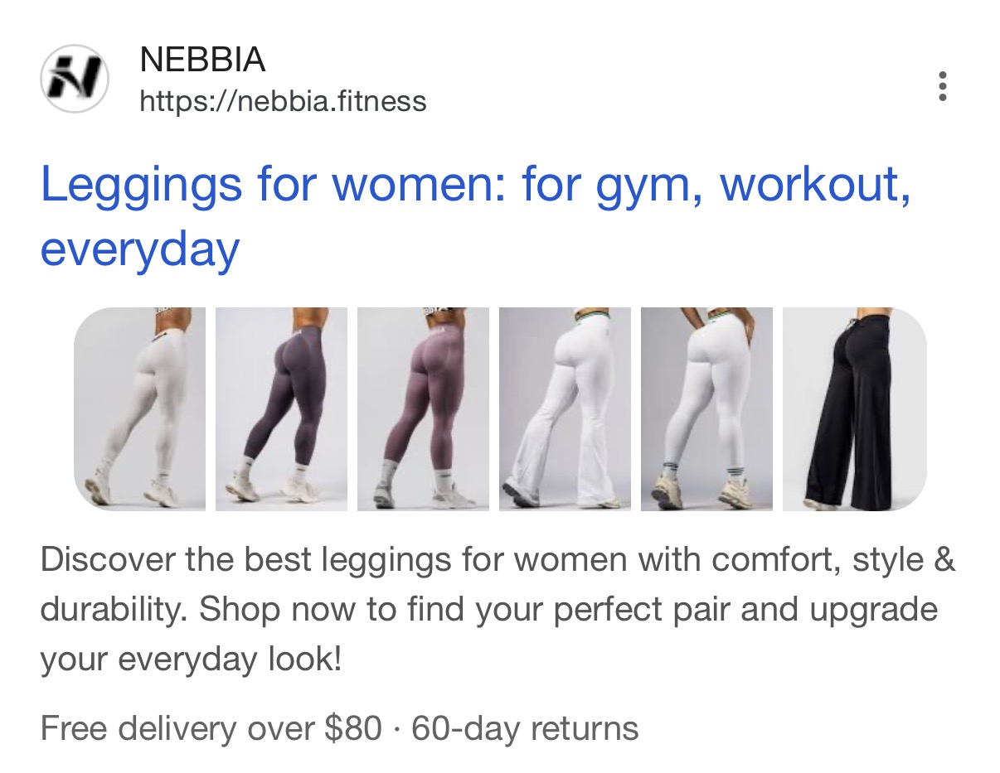
Single-image treatment
The single-image treatment is the more common of the two and appears across industries, not just e-commerce. A single image rendered to the left of the snippet. It appears on product pages, editorial articles, brand pages, and category pages alike. Where the multi-image strip requires Google to find and select multiple relevant product images, the single treatment only needs one. That makes it accessible to a much wider range of pages and a more realistic target for most sites.
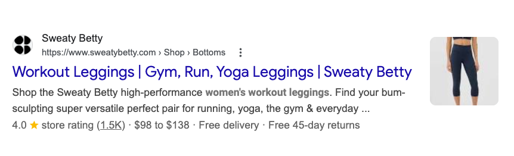
The third option is nothing. No image at all. A standard blue-link listing from 2015. For an e-commerce category page with 30 product images, this is the worst outcome, and it's more common than it should be.
What matters for your diagnostic is knowing which treatment your page should qualify for and which it currently gets. A category page showing zero thumbnails is a fundamentally different problem from one showing a single thumbnail when competitors show seven. The fixes are different. The severity is different. More on this in the diagnostic section.
Metadata layer: telling Google which image to show
Google's image selection for thumbnails is automated. They take into account, in their words, "a number of different sources" to select which image is shown. You can influence that selection. Google's documentation names three specific metadata sources for image thumbnail best practices.
og:image
A <meta property="og:image"> tag pointing to your preferred image. Google uses this as one signal for thumbnail selection in both Search and Discover. It's also used by Facebook, LinkedIn, and Slack for link previews.
<meta property="og:image" content="https://example.com/images/running-shoes-collection.jpg">
Google's documentation is explicit about what this image should not be: a generic image (your site logo), an image with overlaid text, or anything with an extreme aspect ratio.
og:image to the site logo across every template — including category pages with hundreds of usable product images. Google won't show a logo as a thumbnail, so the result gets nothing at all. Check your category templates: View Source, search for og:image, and see what URL is actually set.
What Nike could do better
Nike's Women's Running Shoes category page has 77 products on it. View Source and search for og:image: it's set to android-icon-192x192.png (their Android app icon). A 192×192px swoosh. Google sees that, finds it unsuitable as a thumbnail, and shows nothing. Meanwhile Adidas, directly below on the same SERP, gets a product image.
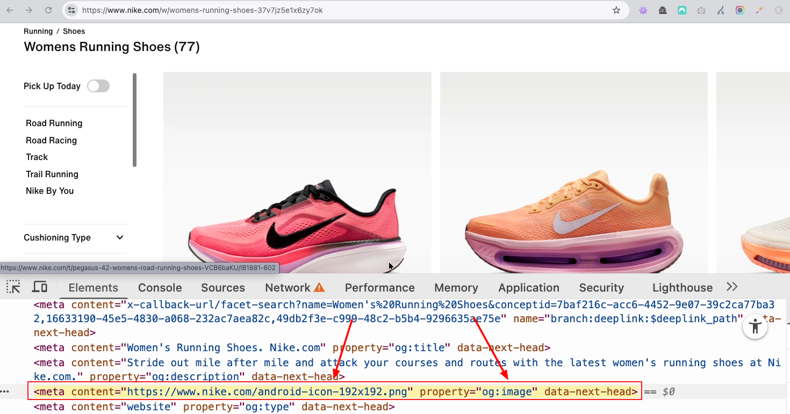
og:image: their Android app icon, not a running shoe.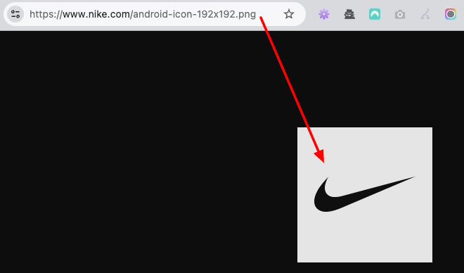
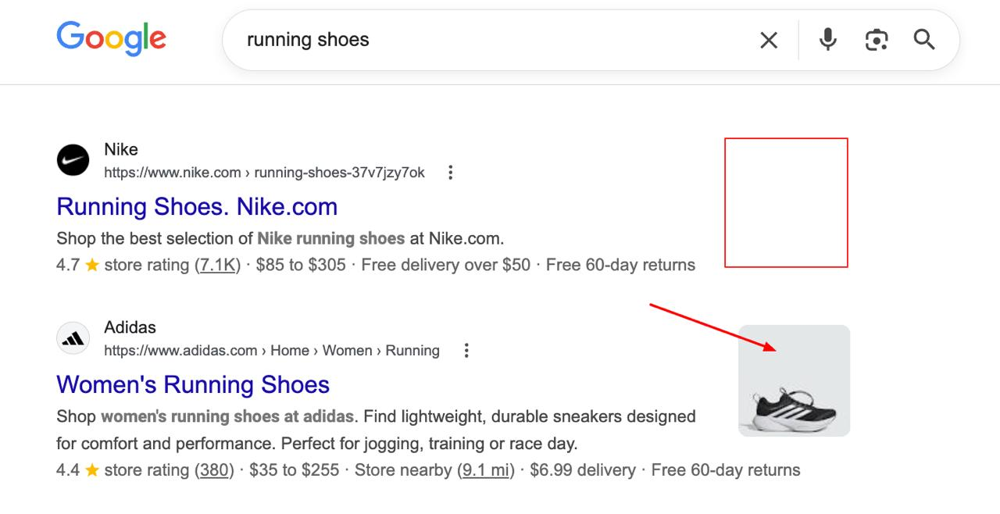
primaryImageOfPage
Explicitly named in Google's documentation, and almost universally ignored. primaryImageOfPage is a schema.org property that tells Google which image you want as the thumbnail. It's not buried in a footnote either — it's in the main guidance, with a code example:
{
"@context": "https://schema.org",
"@type": "WebPage",
"url": "https://example.com/shoes/running/",
"primaryImageOfPage": "https://example.com/images/running-shoes-hero.jpg"
}
Alternatively, you can attach an image property to the main entity of the page using mainEntity or mainEntityOfPage:
{
"@context": "https://schema.org",
"@type": "WebPage",
"url": "https://example.com/shoes/running/",
"mainEntity": {
"@type": "Product",
"image": "https://example.com/images/running-shoes-hero.jpg"
}
}
This won't trigger the multi-image treatment. That appears to depend on the HTML images on the page, not the schema. But for the single thumbnail treatment, primaryImageOfPage gives Google an explicit signal about which image to display. If you've ever wondered why Google picked a random sidebar ad, a social icon, or a 40x40px avatar instead of your 1200px hero image, this is the fix. You're letting Google guess. Google guesses badly.
The property is straightforward to implement. It adds one line to an existing WebPage JSON-LD block. If you don't have a WebPage schema at all, that's a separate problem, but the fix is the same: add one. This is low effort for direct control over a visible SERP element.
max-image-preview:large (the one that gates Discover)
This is where Search and Discover diverge, and where the documentation split causes real confusion.
For standard organic search thumbnails, you don't strictly need max-image-preview:large. Google can and does show thumbnails without it. But for Discover, Google's documentation is explicit: large image previews need to be "enabled by the max-image-preview:large setting, or by using AMP." AMP is increasingly irrelevant, so in practice, this means:
<meta name="robots" content="max-image-preview:large">
If you already have a robots meta tag with other directives, append it: index, follow, max-image-preview:large. One line. In the <head>. Site-wide. The directive costs nothing, has no negative side effects, and without it, Discover won't show large image previews for your content. If your CMS sets max-image-preview:standard or max-image-preview:none by default, which some do, you're actively excluding yourself from Discover's largest visual format.
For sites on WordPress, this is often handled by Yoast or Rank Math, which set max-image-preview:large by default. For custom builds, Shopify themes, or enterprise CMSs, check. It's the kind of thing that gets missed during a migration and nobody notices for months because nobody monitors Discover traffic at the page level.
noimageindex. If it's there, Google won't index any images on the page. No indexing means no thumbnails, no image search results, nothing. This sometimes gets added by CMS plugins or security configurations without anyone realising. A site I audited last year had noimageindex on every page because a developer had copied a robots meta template from a staging environment where it made sense. It had been there for eight months. Nobody noticed because nobody was looking at image indexing.
HTML layer: what Google can find and index
Everything above is about telling Google which image to prefer. But Google needs to find your images first. This is where most thumbnail issues actually originate: the gap between "the page has images" and "Google can see the images".
Google only indexes HTML <img> elements
Google's documentation says this clearly: it finds images in the src attribute of <img> elements. It does not index CSS background-image. This has been true for years and it hasn't changed.
In practice, I regularly audit e-commerce sites where the hero image on every category page, the most prominent visual on the page, the one you'd most want Google to use as a thumbnail, is a CSS background-image. The developer made it a background image because it was easier to centre, crop, and overlay text on. Perfectly reasonable from a frontend perspective. Invisible to Google from an SEO perspective.
This also applies to decorative product images delivered via background-image in card components. If your product listing cards use CSS backgrounds instead of <img> elements for the product photos, Google doesn't see those product images. The page looks image-rich to a human. To Googlebot, it's a text-only page with some layout styling.
The check is fast: View Source (not Inspect Element, which shows the rendered DOM). Search for your product image URLs. If they're in style="background-image:url(...)" attributes and not in <img src="..."> tags, Google isn't indexing them.
JavaScript-dependent images: the silent killer
The page looks fine in a browser. The images load. But Googlebot's first-wave crawl saw none of them. This is the single most common cause of image indexing failures on modern e-commerce sites.
The test: disable JavaScript in your browser (Chrome DevTools → Settings → Debugger → Disable JavaScript) and reload the page. Do images load?
If they disappear, you have images that exist only in the JavaScript-rendered DOM. Google does render JavaScript, but on a separate rendering queue that runs after the initial HTML crawl. The gap between first-wave crawl and JS rendering can be hours, days, or in documented cases, weeks. If your product images are injected by a JS framework after page load, Googlebot's initial crawl captures a page with no images. The rendering pass may eventually find them, or it may not.
Specific patterns that cause this:
- Custom lazy-loading with
data-srcand nosrc: The image element exists in the HTML, butsrcis empty or missing. A JavaScript library swapsdata-srcintosrcon scroll. Googlebot's first-wave crawl sees an<img>with no source. The image doesn't exist yet. - Single-page application frameworks rendering product grids client-side: React, Vue, and Angular apps that fetch product data from an API and render the image grid dynamically. The initial HTML response is a shell with a loading spinner. Product images don't appear until JavaScript executes and API calls complete.
- Infinite scroll loading all images via JS: The first 12 products load in HTML. The remaining 80 products (and their images) only load when the user scrolls, via JavaScript. Google may only see 12 images. That might still be enough for thumbnails, but you've lost 80% of your indexable image content.
Native browser lazy loading (loading="lazy") is not the problem. Google's crawler handles it correctly. The problem is JavaScript-dependent loading where the src attribute doesn't exist in the initial HTML response. If you're unsure, the URL Inspection tool in Search Console shows you what Googlebot actually rendered. Compare the rendered screenshot to what you see with JS enabled. If images are missing, that's your answer.
Responsive images: the fallback that people forget
Modern sites use <picture> elements and srcset attributes to serve different image sizes for different screen widths. Google supports both. But Google's documentation includes a specific warning that's easy to miss: "some browsers and crawlers don't understand these attributes. We recommend that you always specify a fallback URL using the src attribute."
In practice, this means every <img> element that uses srcset should also have a src attribute pointing to a default image. And every <picture> element should contain an <img> child with a src attribute as fallback. Google references the HTML spec directly on this point: per section 4.8.1, the <img> fallback inside <picture> is not optional.
<picture> <source type="image/webp" srcset="shoe-collection.webp"> <source type="image/jpeg" srcset="shoe-collection.jpg"> <img src="shoe-collection.jpg" alt="Women's running shoe collection, 12 styles"> </picture>
A <picture> element with multiple <source> tags but no <img> child is invalid HTML and invisible to crawlers that don't support <picture>. Google's crawler supports it, but Bing's may not process it the same way. The fallback <img> costs nothing and eliminates the risk.
Formats and quality
Google explicitly lists the image formats it supports: BMP, GIF, JPEG, PNG, WebP, SVG, and AVIF. Anything else won't be indexed. Google's guidance is to match the file extension to the actual format: .webp for WebP, .jpg for JPEG. They describe this as a good idea rather than a hard requirement, but it's a simple thing to get right.
On quality: Google's search results already reduce image quality when rendering thumbnails. If the source image is low resolution (say, 150×150px product thumbnails designed for a compact grid), the resulting SERP thumbnail may look bad enough that Google opts not to display it at all. Increasing image resolution on category pages is one of the higher-leverage fixes available once Google can access your images but the thumbnails still look poor.
For format choice, WebP is the pragmatic default for e-commerce product images in 2026: better quality at smaller file sizes than JPEG or PNG, and fully indexed by Google. AVIF compresses better still, with slightly lower browser support.
Alt text
Google's documentation says it uses alt text "along with computer vision algorithms and the contents of the page to understand the subject matter of the image." Missing alt text doesn't always prevent thumbnail display, but it removes one of the signals Google uses to match an image to a query. For e-commerce category pages where thumbnails directly affect CTR, leaving alt text empty is leaving signal on the table for no reason.
The guidance: describe what the image actually shows. Don't keyword-stuff. Google actually documents what bad alt text looks like. It's worse than you'd expect:
| Quality | Example | Why |
|---|---|---|
| Bad | <img src="shoe.jpg"/> |
No alt text at all. Google has zero textual signal about this image. |
| Bad | alt="shoes trainers sneakers running shoes nike air max red shoes buy shoes" |
Keyword stuffing. Google may treat the page as spam. |
| Better | alt="running shoe" |
Minimal but present. Google has a basic signal. |
| Best | alt="Red Nike Air Max 90, side view on white background" |
Descriptive, specific, matches what the image actually shows. Useful for Google and for accessibility. |
For category pages with hundreds of product images, alt text is usually generated from the product title. That's fine. alt="Nike Air Max 90 - Red/White - Men's" is descriptive and generated from existing product data. The issue is category pages where alt text is entirely missing because the template doesn't output it, or where every image has the same alt text (the category name) because nobody thought to pass the product title through.
Text in images
Google's documentation says to avoid text-heavy images in your og:image and schema markup. This is common in e-commerce for obvious reasons: marketing teams have strong feelings about "50% OFF" and "NEW ARRIVAL" and "FREE SHIPPING". Those are valid feelings. Just not for the image you're asking Google to use as the thumbnail.
For the images on your page, that's fine. Promotional overlays on product images in the HTML don't prevent Google from indexing them. But for your og:image and primaryImageOfPage, the image you're explicitly telling Google to use as the thumbnail, use a clean product image. No sale badges. No promotional text. No marketing overlays.
The reason is practical: thumbnails render small. Text that's legible at 800px is unreadable at 60px. A thumbnail that's 40% text overlay looks like a smudge in the SERP. Google knows this. That's why they recommend against it. Use the clean product image for your metadata. Use the promotional version on the page where it renders at full size.
Discover layer: image specs for the Discover feed
The Discover documentation lives on a completely separate page from the image SEO documentation. They share zero cross-links that I can find. The Discover page contains concrete image specifications directly relevant to thumbnail display, easy to miss if you went straight to the image SEO doc and stopped there.
The specs:
| Requirement | Specification | What this means in practice |
|---|---|---|
| Minimum width | 1200px | Below this, Discover won't use your image for the large card format. Period. |
| Minimum total pixels | > 300,000 | Width × height. A 1280×720 image = 921,600 total pixels. Passes easily. A 600×400 image = 240,000. Doesn't pass. |
| Recommended aspect ratio | 16:9 | Discover cards are landscape. Google crops automatically, but auto-crops of portrait images lose the subject. If you crop yourself, optimise for landscape. |
| Robots directive | max-image-preview:large | Covered in the metadata section above. Without this, large Discover cards are off the table regardless of image quality. |
| Image declaration | og:image or schema.org image | Google needs to know which image to use. Specify it explicitly, or Google picks for you — usually not the one you'd choose. |
The 16:9 aspect ratio recommendation deserves specific attention. Discover renders images as horizontal cards. If your og:image is a tall portrait product shot (common in fashion), Google will auto-crop it to landscape, and the result often cuts off the product at the waist or removes the product entirely, leaving a white background with a disembodied shoe. If you're doing your own crop, make sure the important content is centred and survives a 16:9 frame. Test it. Open your og:image, mentally crop it to 16:9. Does it still make sense? If the answer is "it's mostly whitespace with half a handbag," that's what Discover will show.
Worth noting: auto-resizing every image to 16:9 in your CMS isn't the same as composing for it. A 16:9 mechanical crop of a square product image with padding is worse than a well-composed landscape photo at a slightly different ratio. The spec is about final image quality, not a checkbox to tick.
The multi-image treatment: what actually drives it
This is the treatment everyone wants and nobody can reliably trigger. The multi-image thumbnail, where Google shows a horizontal strip of product images next to your organic listing, is the highest-CTR thumbnail format for e-commerce. And there's no schema, no meta tag, no single switch that turns it on.
Based on independent research and my own observations across enterprise e-commerce audits, here's what the evidence suggests:
Structured data is not the deciding factor
I'm currently running a case study on exactly this: auditing pages with the multi-image treatment across e-commerce verticals to see whether any schema type (ItemList, Product, CollectionPage, BreadcrumbList, Organization, or the primaryImageOfPage/mainEntity image signals) correlates with the treatment above baseline. I'll update this article when the full dataset is in.
What the early picture suggests: ItemList appears on some pages with the treatment, which is why some SEOs flag it as a possible trigger. But ItemList typically enumerates every product in a category, the same pages that also have dozens of HTML product images. Isolating the schema contribution from the image contribution isn't possible without controlling for the HTML layer. The correlation doesn't hold up on its own.
Structured data can influence the single thumbnail treatment. Google's documentation confirms this: if there aren't many relevant images accessible in the HTML, Google may fall back on an image from the structured data markup. So schema matters for single thumbnails. For multi-image, the evidence points elsewhere.
CMS doesn't matter (but implementation does)
Shopify, Magento, WordPress, headless custom builds. All have sites that get the multi-image treatment and sites that don't. Blaming the CMS is a dead end. What does matter is how the CMS delivers images: whether product images are in <img> elements or CSS backgrounds, whether they depend on JavaScript to render, whether alt text is output, and whether image quality meets Google's threshold. Those are implementation decisions that happen within a CMS, not choices dictated by it.
Magento sites appear with particularly good coverage of the multi-image treatment in field research. That likely reflects Magento's default category page templates, which render product images as server-side HTML <img> elements rather than client-side rendered components. It's the implementation pattern, not the platform brand.
Multi-image treatment: what the page needs
Cross-referencing field research with Google's own documentation, these are the factors that appear to influence the multi-image treatment:
- 7+ relevant HTML images: Not a magic number, but a practical minimum. Google needs enough images to fill the horizontal strip. Portrait images need more (they're narrower). If your category page only shows 4 product images above the fold, that may not be enough for Google to justify the multi-image format.
- Image relevance to the query: The images Google selects need to be relevant to what the user searched. If a "running shoes" category page has 20 product images but the first 8 are promotional banners, gift cards, and lifestyle shots, Google may not find enough relevant product images for the treatment.
- Single product per image: Google seems to prefer images that show one product clearly, not composite images with multiple products arranged together. A category page where every product image shows 4 colourways of the same shoe in one shot may not trigger the treatment.
- Non-transparent backgrounds: Transparent PNG backgrounds can render as black in Google's thumbnail display. For single thumbnails, this produces an ugly result. For multi-image treatments, Google may avoid the treatment entirely rather than show a row of black rectangles.
- Image sequence and position: The most relevant images should appear early in the page HTML. If your best product images are buried below 15 navigation icons, social media badges, and trust seals, Google may prioritise the wrong images or give up.
- Image indexability: All of the HTML-layer factors covered above. If Google can't find the images (CSS backgrounds, JS-only rendering, blocked by robots.txt), the multi-image treatment is impossible regardless of everything else.
Diagnosing a thumbnail problem
Thumbnail problems come in three shapes: Google can't access the images at all, Google has them but won't show them in the snippet, or Google shows them inconsistently. Each has a different fix, so the first job is telling them apart. To separate "can't access" from "won't show", run site:yourdomain.com/your-page in Google Images: nothing back means Google hasn't indexed the images and the problem is access; images there but not in the web snippet means it's selection. Work through the sequence below in order before changing anything.
noimageindex in the robots meta tag. Check robots.txt for image path blocks (common: Disallow: /images/ or Disallow: /cdn-cgi/). If images are blocked from indexing, nothing else matters. Fix this first.src attributes.site:yourdomain.com/page-path in Google Images. No results: Google can't access the images — go to step 1. Images in Image Search but not in web snippets: a selection problem — go to steps 5 and 6. Images in both: this is a selection or ranking question, not an indexing one.<img src="..."> tags? Or are they in style="background-image:url(...)"? Are there data-src attributes without corresponding src? Do <picture> elements have <img> fallbacks? This is a five-minute check that catches the most common HTML-level problems.og:image pointing to a relevant image (not the site logo)? Is max-image-preview:large set? Is there primaryImageOfPage or an image property on the main entity in structured data? Missing metadata won't always block thumbnails, but it limits your control over which image Google selects.<img> elements with real src attributes? Do they have descriptive alt text? Are they high enough quality and resolution? Are they relevant to the page topic and target queries? Are they single-product images or cluttered composites?site:yourdomain.com [query] with Google set to show 100 results for your top 10 queries. If zero category pages show thumbnails across multiple queries, the problem is architectural: your site-wide template or image delivery approach is the issue, not individual page content.Steps 4, 5, and 6 are HTML-layer checks you can complete with view-source or your browser's inspector: look at og:image, the robots meta tag for max-image-preview, image count, alt text, and whether images are in HTML or CSS. Steps 1, 2, 3, and 7 require Google directly and can't be automated.
Large-site considerations
Image sitemaps
Google's image SEO documentation mentions image sitemaps as a way to surface images that Google might not otherwise discover. For most sites this doesn't matter, because Google finds images through normal HTML crawling. But for sites with CDN-hosted images on a different domain, image sitemaps can be the difference between indexed and not.
Unlike regular sitemaps, image sitemaps can include cross-domain URLs in the <image:loc> elements. If your product images live on cdn.yoursite.com or images.cloudfront.net but your pages are on www.yoursite.com, Google may not associate the images with your pages through crawling alone. An image sitemap creates that connection explicitly.
This is particularly relevant where the images are accessible (you can load them in a browser) but Google hasn't indexed them. If you've ruled out robots.txt blocking, JavaScript rendering issues, and CSS delivery, an image sitemap is the next thing to test. Google also recommends verifying CDN domain ownership in Search Console so they can report crawl errors for images on that domain.
The implementation is straightforward. Add <image:image> elements inside your existing <url> entries, or create a separate image sitemap and reference it from your sitemap index. Google's documentation has the full format.
Image crawl budget
Google's image SEO documentation includes a note that most guides skip: "If an image is referenced on multiple pages within a larger website, consider the site's overall crawl budget. In particular, consistently reference the image with the same URL, so that Google can cache and reuse the image without needing to request it multiple times."
On a 100-page site, this doesn't matter. On a site with 50,000 category pages each referencing 30 product images, it matters enormously. If every page references a slightly different URL for the same product image (different query strings, different CDN cache-busting parameters, different resize dimensions), Google has to request each variant separately. That's crawl budget spent on redundant image fetches instead of discovering new content.
The fix: reference each image with the same URL across all pages — no session IDs, analytics parameters, or cache-busting strings appended in your HTML. Google doesn't canonicalise images, so there's no canonical image URL the way there is for pages; the concern is purely crawl efficiency, since each URL variant of the same image is a separate crawl request. Nobody gets fired for a session ID in a product image URL. But at 50,000 category pages, it adds up.
Common questions about Google image thumbnails
max-image-preview:large in the robots meta tag. A 1280×720 image meets all three. A 600×400 image meets none of them.src, only data-src), images delivered as CSS background-image instead of <img> elements, noimageindex in the robots meta tag, images blocked by robots.txt, image quality too low, or images on a CDN that Google hasn't associated with your pages. Start by disabling JavaScript and checking if images still load. That catches the most common cause.<img> elements with real src attributes, and of sufficient quality. Having 40 images won't help if Google can't index them.